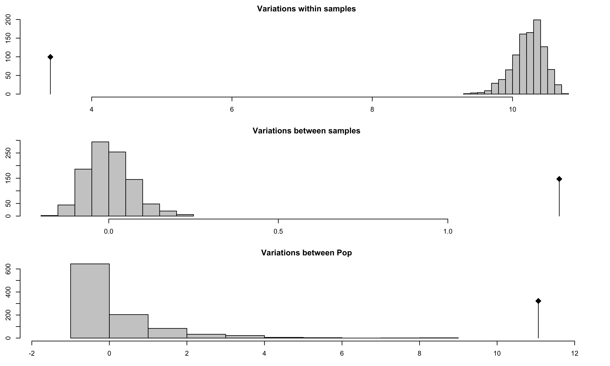
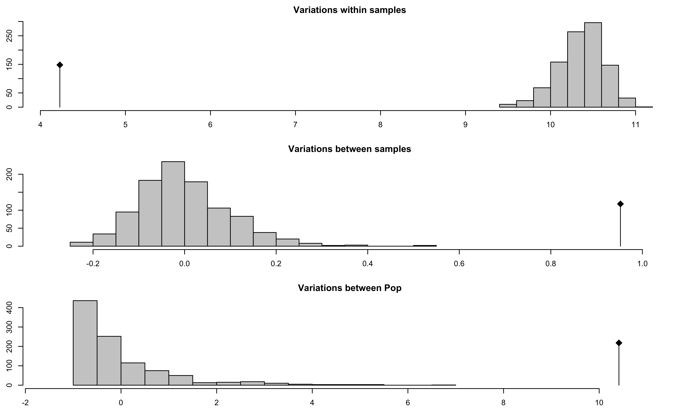
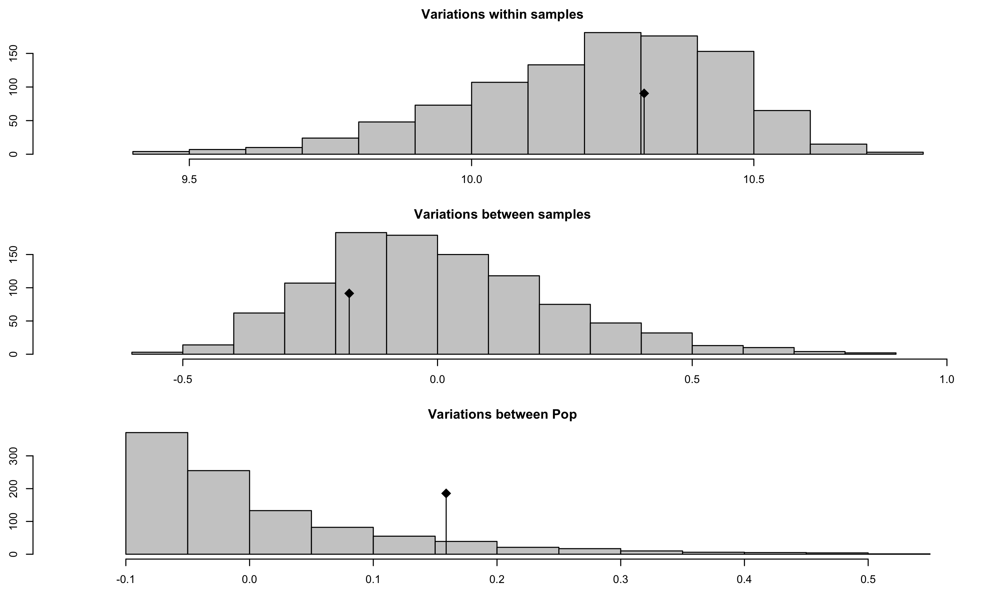

In this chapter, we will utilize AMOVA to analyze our populations. AMOVA stands for Analysis of MOlecular VAriance and is a method to detect population differentiation utilizing molecular markers (Excoffier et al. 1992). This procedure was initially implemented for DNA haplotypes, but applies to any marker system. Poppr’s implementation of AMOVA requires two very basic components: A distance matrix derived from the data and a separate table used to partition the data into different hierarchical levels.
The distance matrix can be calculated using any distance as long as it is euclidean. The distance that is used in the program Arlequin is the opposite of the Kronecker Delta function that counts the number of differences summed over \(L\) loci:
\[ \delta_{l,m} = \begin{cases} 1 \text{ if } m = l,\\ 0 \text{ if } m \neq l \end{cases} \] \[ d_{i,j} = \sum_{L = 1}^L 1 - \delta_{i,j} \]
To calculate AMOVA in poppr, one simply needs to supply a data set with hierarchical levels. We will use the Aphanomyces euteiches data set from (Grünwald & Hoheisel, 2006).
library(poppr)
data(Aeut)
Aeut <- as.genclone(Aeut)
Aeut##
## This is a genclone object
## -------------------------
## Genotype information:
##
## 119 multilocus genotypes
## 187 diploid individuals
## 56 dominant loci
##
## Population information:
##
## 3 hierarchical levels - Pop_Subpop Pop Subpop
## 2 populations defined - Athena Mt. VernonWe can see that this data set contains clonal data and has three hierarchical levels where the first is really a combination of the other levels. We can take a look at the different hierarchical levels, first populations followed by subpopulations:
table(gethierarchy(Aeut, ~Pop))##
## Athena Mt. Vernon
## 97 90table(gethierarchy(Aeut, ~Pop/Subpop, combine = FALSE))## Subpop
## Pop 1 2 3 4 5 6 7 8 9 10
## Athena 9 12 10 13 10 5 11 8 10 9
## Mt. Vernon 10 6 8 12 17 12 12 13 0 0In this example, we have a data set of 187 individuals sampled from two fields in regions Athena and Mt. Vernon over different 8 or 10 soil samples within each field. We want to see if most of the variance is observed at the sample, field, or regional level.
In panmictic populations, we would expect to see most of the variance arise from within samples. If we see that the most of the variance occurs among samples within populations or among populations, then there is evidence that we have some sort of population structure. In the case of clonal organisms, this would help support a hypothesis of clonal reproduction. Since Aphanomyces eutieches is known to be clonal, we would not expect most of the variance to come from within samples.
Let’s invoke the AMOVA functions with and without clone correction:
Aeutamova <- poppr.amova(Aeut, ~Pop/Subpop)
Aeutamovacc <- poppr.amova(Aeut, ~Pop/Subpop, clonecorrect = TRUE)We’ll look at the AMOVA results for both analyses.
Aeutamova## $call
## ade4::amova(samples = xtab, distances = xdist, structures = xstruct)
##
## $results
## Df Sum Sq Mean Sq
## Between Pop 1 1051.2 1051.235
## Between samples Within Pop 16 273.5 17.091
## Within samples 169 576.5 3.411
## Total 186 1901.2 10.221
##
## $componentsofcovariance
## Sigma %
## Variations Between Pop 11.063 70.007
## Variations Between samples Within Pop 1.329 8.407
## Variations Within samples 3.411 21.586
## Total variations 15.803 100.000
##
## $statphi
## Phi
## Phi-samples-total 0.7841
## Phi-samples-Pop 0.2803
## Phi-Pop-total 0.7001Aeutamovacc## $call
## ade4::amova(samples = xtab, distances = xdist, structures = xstruct)
##
## $results
## Df Sum Sq Mean Sq
## Between Pop 1 742.0 741.987
## Between samples Within Pop 16 185.7 11.605
## Within samples 123 520.1 4.229
## Total 140 1447.8 10.341
##
## $componentsofcovariance
## Sigma %
## Variations Between Pop 10.4132 66.778
## Variations Between samples Within Pop 0.9521 6.105
## Variations Within samples 4.2286 27.117
## Total variations 15.5938 100.000
##
## $statphi
## Phi
## Phi-samples-total 0.7288
## Phi-samples-Pop 0.1838
## Phi-Pop-total 0.6678The first thing to look at are the $results element. The degrees of freedom (the Df column) should match what we expect from our (not clone-corrected) data. The number in the Total row should equal 186 or \(N - 1\), where values are calculated from pooled data. Note that here, “samples” actually refers to subpopulations since we cannot asses within-sample variance of dominant data.
The $componentsofcovariance table shows how much variance is detected at each hierarchical level. We expect variations within samples to give the greatest amount of variation for populations that are not significantly differentiated. Sigma represents the variance, \(\sigma\), for each hierarchical level and to the right is the percent of the total.
Finally, $statphi provides the \(\phi\) population differentiation statistics. These are used to test hypotheses about population differentiation. We would expect a higher \(\phi\) statistic to represent a higher amount of differentiation.
Note, if you want to make a table of any of these components, you can isolate them by using the $ operator and then export it to a table with write.table. Here’s an example with the components of covariance:
write.table(Aeutamova$componentsofcovariance, sep = ",", file = "~/Documents/AeutiechesAMOVA.csv")To test if populations are significantly different, we perform a randomization test using the function randtest() from the ade4 package. This will randomly permute the sample matrices as described in (Excoffier et al. 1992).
set.seed(1999)
Aeutsignif <- randtest(Aeutamova, nrepet = 999)
Aeutccsignif <- randtest(Aeutamovacc, nrepet = 999)plot(Aeutsignif)
Aeutsignif## class: krandtest
## Monte-Carlo tests
## Call: randtest.amova(xtest = Aeutamova, nrepet = 999)
##
## Number of tests: 3
##
## Adjustment method for multiple comparisons: none
## Permutation number: 999
## Test Obs Std.Obs Alter Pvalue
## 1 Variations within samples 3.411 -31.385 less 0.001
## 2 Variations between samples 1.329 20.687 greater 0.001
## 3 Variations between Pop 11.063 9.425 greater 0.001
##
## other elements: adj.method callFrom this output, you can see three histograms representing the distribution of the randomized hierarchy. The black line represents the observed data. You can see a table of observed results in the output showing that there is significant population structure considering all levels of the population hierarchy. Of course, this could be due to the presence of clones, so let’s visualize the results from the clone corrected data set below:
plot(Aeutccsignif)
Aeutccsignif## class: krandtest
## Monte-Carlo tests
## Call: randtest.amova(xtest = Aeutamovacc, nrepet = 999)
##
## Number of tests: 3
##
## Adjustment method for multiple comparisons: none
## Permutation number: 999
## Test Obs Std.Obs Alter Pvalue
## 1 Variations within samples 4.2286 -20.901 less 0.001
## 2 Variations between samples 0.9521 9.560 greater 0.001
## 3 Variations between Pop 10.4132 9.758 greater 0.001
##
## other elements: adj.method callThe above graphs show significant population differentiation at all levels given that the observed \(\phi\) does not fall within the distribution expected from the permutation. Compare the results of our AMOVA analysis to those published in (Grünwald & Hoheisel, 2006). They should be identical.
Since AMOVA is used to detect whether or not there is significant population structure, we can see what happens when we randomly shuffle the population assignments in our data. Here we will show what the populations look like before and after shuffling:
Aeut.new <- Aeut
head(gethierarchy(Aeut)[, -1])## Pop Subpop
## 1 Athena 1
## 2 Athena 1
## 3 Athena 1
## 4 Athena 1
## 5 Athena 1
## 6 Athena 1set.seed(9001)
head(gethierarchy(Aeut)[sample(nInd(Aeut)), -1])## Pop Subpop
## 44 Athena 4
## 177 Mt. Vernon 8
## 36 Athena 4
## 127 Mt. Vernon 4
## 8 Athena 1
## 39 Athena 4Here we see that the populations are completely shuffled, so in the next step, we will reassign the hierarchy with these newly shuffled populations and rerun the AMOVA analysis.
set.seed(9001)
sethierarchy(Aeut.new) <- gethierarchy(Aeut)[sample(nInd(Aeut)), -1]
Aeut.new.amova <- poppr.amova(Aeut.new, ~Pop/Subpop)##
## No missing values detected.Aeut.new.amova## $call
## ade4::amova(samples = xtab, distances = xdist, structures = xstruct)
##
## $results
## Df Sum Sq Mean Sq
## Between Pop 1 23.21 23.206
## Between samples Within Pop 16 136.34 8.521
## Within samples 169 1741.65 10.306
## Total 186 1901.20 10.221
##
## $componentsofcovariance
## Sigma %
## Variations Between Pop 0.1589 1.544
## Variations Between samples Within Pop -0.1733 -1.684
## Variations Within samples 10.3056 100.140
## Total variations 10.2912 100.000
##
## $statphi
## Phi
## Phi-samples-total -0.001402
## Phi-samples-Pop -0.017106
## Phi-Pop-total 0.015440Aeut.new.amova.test <- randtest(Aeut.new.amova, nrepet = 999)
Aeut.new.amova.test## class: krandtest
## Monte-Carlo tests
## Call: randtest.amova(xtest = Aeut.new.amova, nrepet = 999)
##
## Number of tests: 3
##
## Adjustment method for multiple comparisons: none
## Permutation number: 999
## Test Obs Std.Obs Alter Pvalue
## 1 Variations within samples 10.3056 0.3706 less 0.602
## 2 Variations between samples -0.1733 -0.7517 greater 0.775
## 3 Variations between Pop 0.1589 1.4471 greater 0.096
##
## other elements: adj.method callplot(Aeut.new.amova.test)
We see that there now is no significant population structure.
AMOVA is a powerful tool that can help support hypotheses of population structure due to clonal reproduction or isolation without making assumptions about Hardy-Weinberg equilibrium. We have shown that we can reject the \(H_o\) of random mating between the two populations and have strong evidence that these populations are significantly differentiated at all hierarchical levels (Grünwald & Hoheisel, 2006). From these results, we can investigate hypotheses as to why these populations are significantly differentiated.
This example was performed with a data set of dominant (AFLP) markers, but it can also be performed on codominant markers as well (SNP, SSR). These provide more information because within sample (individual) variance is also assessed. If one wants to utilize a genetic distance that has biological relevance, a different distance matrix can be provided by the user. See help('amova', package = 'poppr') for more details.
L Excoffier, PE Smouse, JM Quattro, (1992) Analysis of molecular variance inferred from metric distances among DNA haplotypes: application to human mitochondrial DNA restriction data. Genetics 131 (2) 479-491 http://www.genetics.org/content/131/2/479.abstract
NJ Grünwald, G-A Hoheisel, (2006) Hierarchical analysis of diversity, selfing, and genetic differentiation in populations of the oomycete Aphanomyces euteiches. Phytopathology 96 (10) 1134-1141 http://apsjournals.apsnet.org/doi/abs/10.1094/PHYTO-96-1134